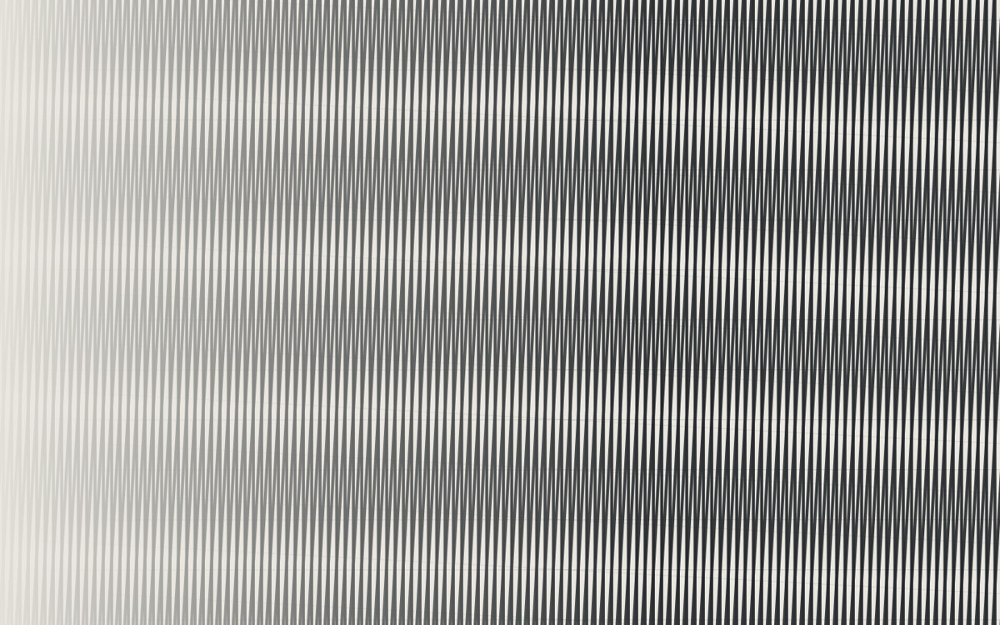
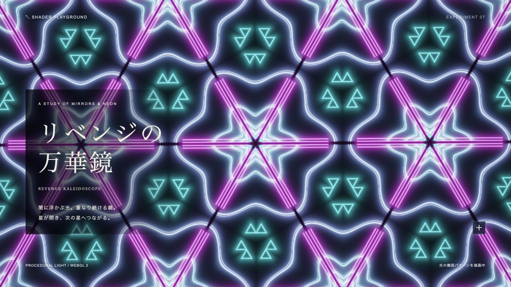
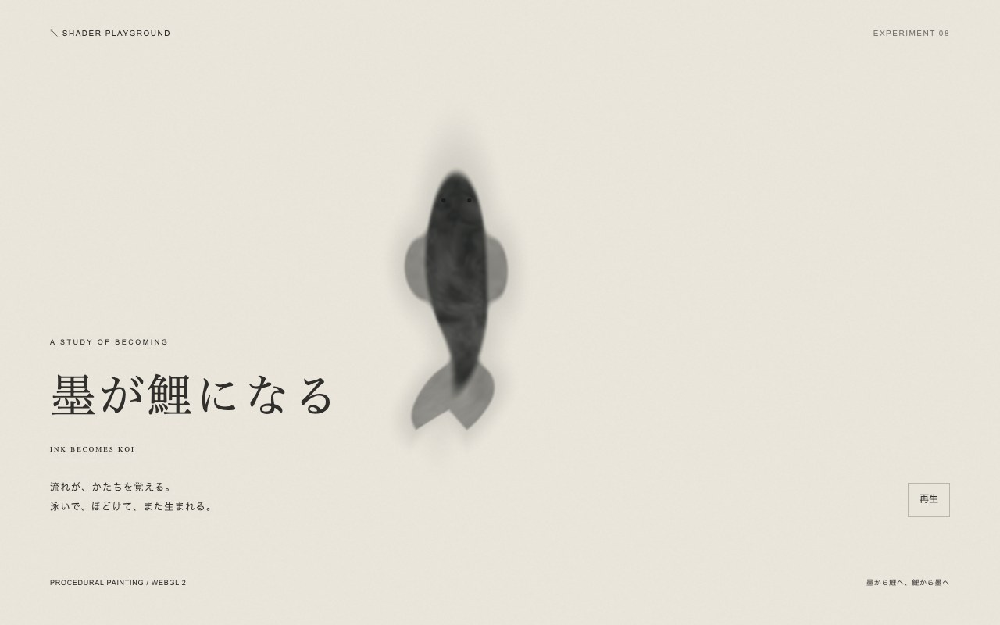
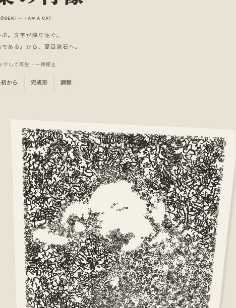

CODE INTO FEELING VOL. 01 — ONGOING
SHADER
PLAYGROUND
SELECTED EXPERIMENTS
ONGOING COLLECTION INTERACTIVE / WEBGL 2
INTERACTIVE / WEBGL 201触れて、描く
墨の庭
INK PLAYGROUND
 INTERACTIVE / WEBGL 2
INTERACTIVE / WEBGL 202雨を眺める
雨粒と曇りガラス
HEARTFELT — RAIN ON GLASS
 INTERACTIVE / TYPOGRAPHY
INTERACTIVE / TYPOGRAPHY03言葉を眺める
言葉の肖像
PORTRAITS IN WORDS — AKUTAGAWA
 PROTOTYPE / WEBGL 2
PROTOTYPE / WEBGL 204渦を眺める
水中のインク
INK IN WATER

INTERACTIVE / CANVAS 2D · FRI 11/614格子を揺らす
磁力のモアレ
MAGNETIC MOIRÉ
 PROTOTYPE / WEBGL 2
PROTOTYPE / WEBGL 205水面を眺める
水のあわい
BETWEEN DEPTH AND LIGHT
 GENERATIVE / WEBGL 2
GENERATIVE / WEBGL 206光を眺める
薄膜の万華鏡
IRIDESCENT KALEIDOSCOPE

GENERATIVE / WEBGL 207鏡を覗く
リベンジの万華鏡
REVENGE KALEIDOSCOPE

GENERATIVE / WEBGL 208生まれる瞬間へ
墨が鯉になる
INK BECOMES KOI

INTERACTIVE / THREE.JS09言葉を眺める
言葉の肖像 — 夏目漱石
PORTRAITS IN WORDS — SŌSEKI